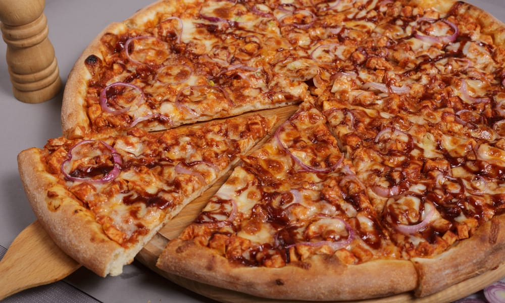

QQB Chiken Pizza

Are you going to make that special dinner and still don't know what to prepare?
Then, bet on this delicious chicken barbecue pizza that promises to win everyone over in your home!
With a distinctive flavor that only this sauce has, it is the kind of recipe that needs to be written down in your notebook.
INGREDIENTS
- 1 Pizza crust
- 1/2 Cup of barbecue sauce
- 1/2 Cup of mozzarella chesse
- 1/2 Cup of coocked and shredded chicken
- 1/4 Cup of sliced red onion
- 1/4 Cup of chopped fresh cilantro
INSTRUCTIONS
- Preheat your oven to 425°F (218°C).
- Spread the barbecue sauce over the pizza crust, leaving a small border around the edge
- Sprinkle the mozzarella cheese over the barbecue sauce
- Add the cooked and shredded chicken on top of the cheese.
- Add the sliced red onion over the chicken.
- Bake the pizza in the preheated oven for 12-15 minutes or until the crust is golden brown.
- Remove the pizza from the oven and sprinkle the chopped cilantro over the top.
- Slice and serve hot. Enjoy